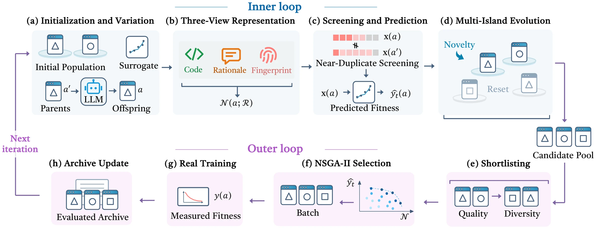
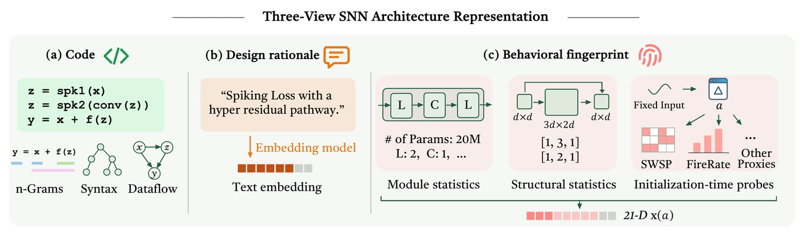

arXiv 2609.40258LLM-guided evolution · native spiking networks
Architecture search beyond the search space.
OpenArchEvo makes an LLM the mutation operator of a population-based evolutionary search: the model writes complete network programs; a surrogate and a three-view novelty measure decide which survive. Its spiking discovery NeuroGate reaches 26.4 WikiText-103 PPL, ahead of the ANN DeltaNet (27.5), at 31.7× lower estimated arithmetic energy than a dense Transformer.
Large Language Model-Guided Evolutionary Discovery of Native Neural Architectures for Spiking Sequence Modeling
Search trajectory · real data
Ten iterations, 171 trained architectures
Each dot is an architecture trained on both proxy tasks: 20 initial experts and 151 found by the search. Press play to watch the cumulative Pareto front advance toward lower perplexity and higher accuracy. Click a dot to inspect it; double-click to open it.
About the dataSearch-proxy results of all 171 trained architectures
- WT2 PPL: WikiText-2 perplexity after 30 training epochs. ListOps acc.: accuracy after 25 epochs on ⅓ of the ListOps training set.
- Fitness combines the two with the paper formula (App. D.2); the SpikingDeltaNet expert (58.28 PPL, 53.0%) scores 0.500.
- Runs above 200 PPL (diverged; 9 in total) are kept and drawn in the band on the right of the full-range view.
Method
Two loops: explore cheaply, train selectively
An inner loop generates thousands of feasible programs per iteration and ranks them with a surrogate. An outer loop spends real GPU time on at most 16 of them, chosen for predicted performance and novelty, and feeds the measured results back.

INNER LLM-driven program evolution
- Seed 10 islands with strong and diverse programs from the trained archive.
- Mutate: the LLM rewrites or recombines parent programs sampled within or across islands.
- Screen out broken, non-causal and near-duplicate programs; the surrogate predicts the rest.
- Survive: islands keep their best-predicted programs and weak islands are reseeded, until ~1,080 are accepted.
OUTER Selective real training
- Select at most 16 candidates by NSGA-II on predicted fitness and novelty.
- Train each on the WikiText-2 and ListOps proxies.
- Archive the measured results and refresh the surrogate.
- Repeat for 10 iterations: 151 new architectures.
Representation · core contribution
How do you compare architectures nobody has trained yet?
When candidates are long architecture programs, the hard question is not how you search (evolution or a multi-agent system) but how you describe a network so that you can compare candidates and predict their quality. OpenArchEvo describes every program at three levels.

-
01 · Code
What it implements
Operations and dataflow, compared with CodeBLEU.
-
02 · Design rationale
What it intends
The LLM’s stated idea, compared by text embedding.
-
03 · Behavioural fingerprint
How it behaves
21 numbers measured before training, compared by cosine.
Novelty is the mean three-view distance to a reference set. The fingerprint alone also feeds the surrogate and the near-duplicate filter.
d = 1 − ⅓(scode + srat + sfp)
𝒩(a) = meana′∈ℛ d(a, a′)
Inside the fingerprint
Seven probes on the untrained network, plus 14 statistics read from its modules and execution trace.
Two architectures, two fingerprints
Logged fingerprints of trained architectures. Each bar is scaled with the fixed bounds used for similarity: the dashed ticks are the 5th and 95th percentiles of the calibration set.
From fingerprint to predicted quality
Why TabPFN-2.5: the archive holds only tens to hundreds of trained architectures, and a pretrained tabular model predicts from them in context, with no surrogate training in each iteration.
Inside one iteration · real data
What the inner loop explored before anything was trained
Each grey dot is a program the LLM wrote and the surrogate scored; the coloured dots are the few that were then trained (hover to compare prediction with reality).
Results
Final Pareto front
After iteration 10, no other trained architecture beats these on both search proxies: lower WT2 perplexity and higher ListOps accuracy.
Paper resultsFull-scale retraining on WikiText-103 and Long Range Arena (Table 1) and spiking ablations (Table 2)
Are the evolved elements really spike-native?
Ablations on WT2 under the fixed search protocol (paper Table 2). Removing HomeoResSSM’s spike-driven control costs 6.9 PPL; restoring DeltaNet’s SiLU hurts NeuroGate; LoopMem’s state-norm feedback helps the SNN but slightly hurts a non-spiking version.
Architecture explorer
Every trained architecture, with code and diagram
Open any architecture for its diagram, code, rationale and metrics. Browse all diagrams →
Program zoo: ASI-Arch set
ASI-Arch token-mixer programs, baselines and fully-spiking LLM rewrites from the earlier surrogate study (legacy protocol; metrics are not comparable to the main-search archive and carry no paper fitness). Open a program to view its code.
Cite